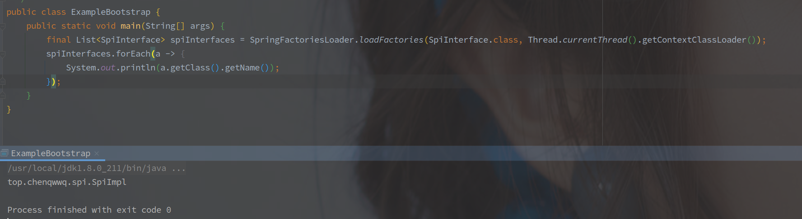

SpringBoot的工厂加载机制
工厂加载机制是 SpringBoot 的扩展点之一。
首先 META-INF/spring.factories
路径下配置相关子类，在框架启动时借由SpringFactoriesLoader`加载到框架的上下文，实现自定义扩展。
[TOC]
示例

SpringFactoriesLoader 可以独立于整个 Spring 的体系，作为一个动态加载（SPI）机制。
spring.factories文件

一个配置以等号划分 key 和 value，以逗号划分多个 value，斜杠换行。
要注意的是，value 中的指定的类必须是 key 的子类，否则会报
IllegalArgumentException。
内部变量
SpringFactoriesLoader 就是 Spring 工厂加载机制的核心工具类，但是其源码并不复杂。
以下为其中的成员变量：
// 工厂加载机制的配置文件路径，写死不可修改
public static final String FACTORIES_RESOURCE_LOCATION = "META-INF/spring.factories";
// 日志
private static final Log logger = LogFactory.getLog(SpringFactoriesLoader.class);
// 缓存，第一遍读取配置文件时，所有的 k/v 对都会放在 cache 中，不需要重复读文件。
// 以 ClassLoader 为 key，value 最终是 LinkedMultiValueMap 结构
private static final Map<ClassLoader, MultiValueMap<String, String>> cache = new ConcurrentReferenceHashMap<>();
spring.factories 配置类的地址是固定的，无法修改。
根据 Class 对象获取
该方法是获取全部的扩展类的全限定名。
只是读取配置文件中的信息，相关类的实例化流程需要自己实现。
// 以一个Class类和ClassLoader为入参
public static List<String> loadFactoryNames(Class<?> factoryType, @Nullable ClassLoader classLoader){
String factoryTypeName = factoryType.getName();
return loadSpringFactories(classLoader).getOrDefault(factoryTypeName, Collections.emptyList());
}
private static Map<String, List<String>> loadSpringFactories(@Nullable ClassLoader classLoader) {
// 从缓存中获取，如果有直接退出。
MultiValueMap<String, String> result = cache.get(classLoader);
if (result != null) {
return result;
}
try {
// 使用 ClassLoader 获取工厂配置资源的全路径
Enumeration<URL> urls = (classLoader != null ?
classLoader.getResources(FACTORIES_RESOURCE_LOCATION) :
ClassLoader.getSystemResources(FACTORIES_RESOURCE_LOCATION));
result = new LinkedMultiValueMap<>();
// 遍历获取到的 spring.factories 文件
while (urls.hasMoreElements()) {
URL url = urls.nextElement();
UrlResource resource = new UrlResource(url);
// 获取其中的 Properties 属性值。
Properties properties = PropertiesLoaderUtils.loadProperties(resource);
for (Map.Entry<?, ?> entry : properties.entrySet()) {
// 获取key值,去空
String factoryTypeName = ((String) entry.getKey()).trim();
// 按照逗号拆分value,并遍历添加到result
for (String factoryImplementationName : StringUtils.commaDelimitedListToStringArray((String) entry.getValue())) {
result.add(factoryTypeName, factoryImplementationName.trim());
}
}
}
// 添加到缓存
cache.put(classLoader, result);
return result;
}catch (IOException ex) {
throw new IllegalArgumentException("Unable to load factories from location [" +
FACTORIES_RESOURCE_LOCATION + "]", ex);
}
}
另外的 SpringFactoriesLoader 中也有提供默认的实例化方法，以及获取已经实例化的类的方法。
根据 Class 对象获取实例对象
- 和
loadFactoryNames方法的区别就是该类返回的是实例化好的类
public static <T> List<T> loadFactories(Class<T> factoryType, @Nullable ClassLoader classLoader) {
Assert.notNull(factoryType, "'factoryType' must not be null");
// 指定类加载器
ClassLoader classLoaderToUse = classLoader;
if (classLoaderToUse == null) {
classLoaderToUse = SpringFactoriesLoader.class.getClassLoader();
}
// 调用loadFactoryNames方法获取所有配置的类名
List<String> factoryImplementationNames = loadFactoryNames(factoryType, classLoaderToUse);
if (logger.isTraceEnabled()) {
logger.trace("Loaded [" + factoryType.getName() + "] names: " + factoryImplementationNames);
}
List<T> result = new ArrayList<>(factoryImplementationNames.size());
// 调用SpringFactoriesLoader内部默认的实例化方法，遍历并实例化
for (String factoryImplementationName : factoryImplementationNames) {
result.add(instantiateFactory(factoryImplementationName, factoryType, classLoaderToUse));
}
// 按照Order排序
AnnotationAwareOrderComparator.sort(result);
return result;
}
默认的实例化方法
@SuppressWarnings("unchecked")
private static <T> T instantiateFactory(String instanceClassName, Class<T> factoryClass, ClassLoader classLoader) {
try {
Class<?> instanceClass = ClassUtils.forName(instanceClassName, classLoader);
if (!factoryClass.isAssignableFrom(instanceClass)) {
throw new IllegalArgumentException(
"Class [" + instanceClassName + "] is not assignable to [" + factoryClass.getName() + "]");
}
return (T) ReflectionUtils.accessibleConstructor(instanceClass).newInstance();
}
catch (Throwable ex) {
throw new IllegalArgumentException("Unable to instantiate factory class: " + factoryClass.getName(), ex);
}
}
// ReflectionUtils#accessibleConstructor
public static <T> Constructor<T> accessibleConstructor(Class<T> clazz, Class<?>... parameterTypes)
throws NoSuchMethodException {
Constructor<T> ctor = clazz.getDeclaredConstructor(parameterTypes);
makeAccessible(ctor);
return ctor;
}
SpringFactoriesLoader 中默认的实例化方法，就是通过默认的无参构造 newInstance() 方法创建。
工厂加载机制在启动流程中的应用
SpringBoot 启动流程个中也会使用工厂加载机制加载一些类，但并不一定使用默认的构造函数，而是使用自定义的带参构造。
SpringApplication 的构造函数
// SpringApplication的构造函数中的两行初始化代码
setInitializers((Collection) getSpringFactoriesInstances(ApplicationContextInitializer.class));
setListeners((Collection) getSpringFactoriesInstances(ApplicationListener.class));
// run方法里面获取监听器
private SpringApplicationRunListeners getRunListeners(String[] args) {
Class<?>[] types = new Class<?>[] { SpringApplication.class, String[].class };
return new SpringApplicationRunListeners(logger,
getSpringFactoriesInstances(SpringApplicationRunListener.class, types, this, args));
}
getSpringFactoriesInstance
// SpringApplication
private <T> Collection<T> getSpringFactoriesInstances(Class<T> type) {
// 空壳方法，直接调用重载
return getSpringFactoriesInstances(type, new Class<?>[] {});
}
private <T> Collection<T> getSpringFactoriesInstances(Class<T> type, Class<?>[] parameterTypes, Object... args) {
// 获取当前的类加载器
ClassLoader classLoader = getClassLoader();
// 获取配置中的类全限定名，去重
Set<String> names = new LinkedHashSet<>(SpringFactoriesLoader.loadFactoryNames(type, classLoader));
// 不使用SpringFactoriesLoader的默认构造，调用自定义方法
List<T> instances = createSpringFactoriesInstances(type, parameterTypes, classLoader, args, names);
AnnotationAwareOrderComparator.sort(instances);
return instances;
}
// SpringApplication内部实现的实例化方法
@SuppressWarnings("unchecked")
private <T> List<T> createSpringFactoriesInstances(Class<T> type, Class<?>[] parameterTypes,
ClassLoader classLoader, Object[] args, Set<String> names) {
List<T> instances = new ArrayList<>(names.size());
for (String name : names) {
try {
Class<?> instanceClass = ClassUtils.forName(name, classLoader);
Assert.isAssignable(type, instanceClass);
// 获取包含指定参数的构造函数
Constructor<?> constructor = instanceClass.getDeclaredConstructor(parameterTypes);
// 使用固定的构造函数和入参实例化对象
T instance = (T) BeanUtils.instantiateClass(constructor, args);
instances.add(instance);
}
catch (Throwable ex) {
throw new IllegalArgumentException("Cannot instantiate " + type + " : " + name, ex);
}
}
return instances;
}